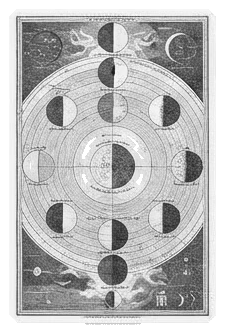

05 / 09 · Experience · Near orbit
Experience
People will forget the features. They’ll remember whether it trusted them.
The experience is everything around using the product: finding your way in, doing the main thing, recovering when something goes wrong. Feeling is not decoration. It comes from choices.
Same coffee, two shops
Fig. 05.1 · One ordering moment
Shop A
Menu Espresso · ristretto · lungo · cortado · gibraltar · flat white · macchiato (trad.) · SO / blend · V60 · kalita · chemex · nitro CB · cold drip · affogato · alt milk +
“Next!”
Order at register. No substitutions.
Shop B
Coffee — smooth, not bitter. Coffee with milk — mild, creamy.
First time? Here’s what we’d recommend.
Take your time. We’ll be ready when you are.
Ask us anything.
Three moments
- 01Finding your way in.
- 02Doing the main thing.
- 03When something goes wrong.

A Notion example
Placeholder — Notion screenshots: a blank page vs. a guided class-project template
Approved screenshots only, framed as screenshots. Without approval, an abstract wireframe in this site’s own visual language, labelled illustrative.
Try it
We want this moment to feel ___, so we will ___.
Say it to the person next to you, or type it in chat.
Key line
‘Welcoming’ is not a visual style. It is something the experience must prove.